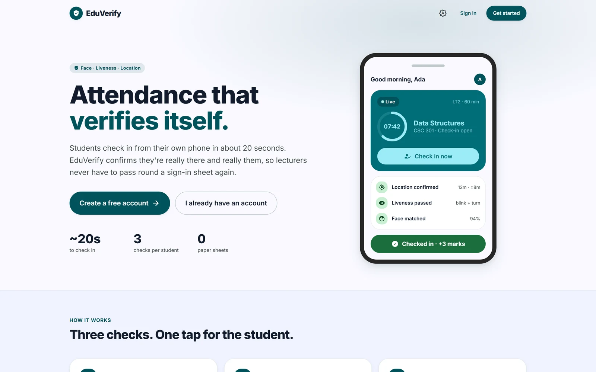
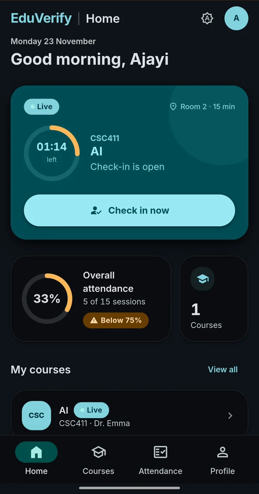
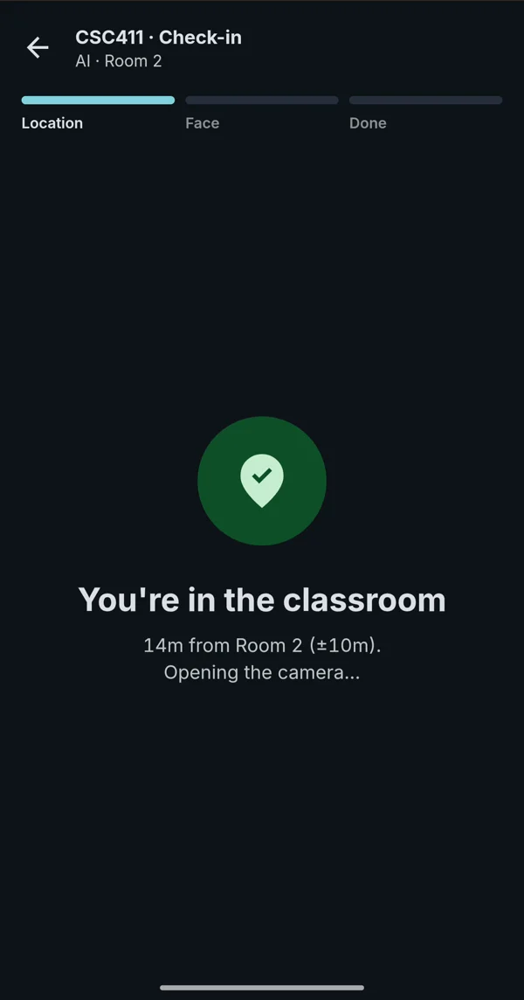
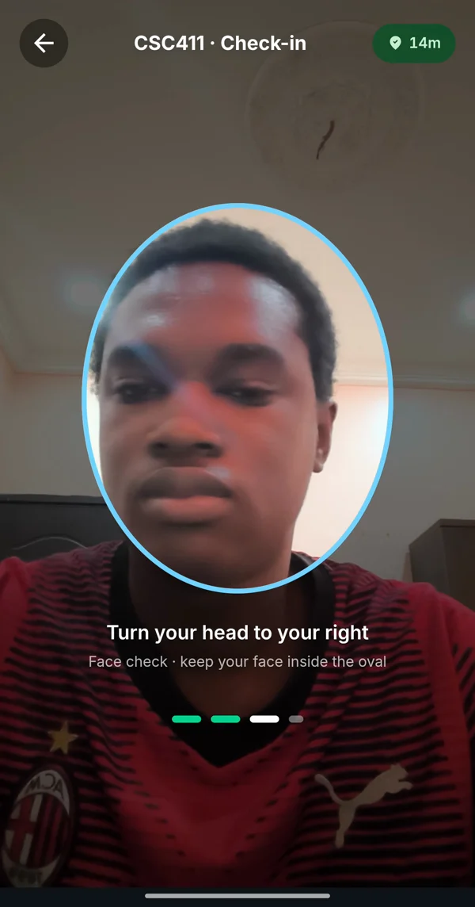
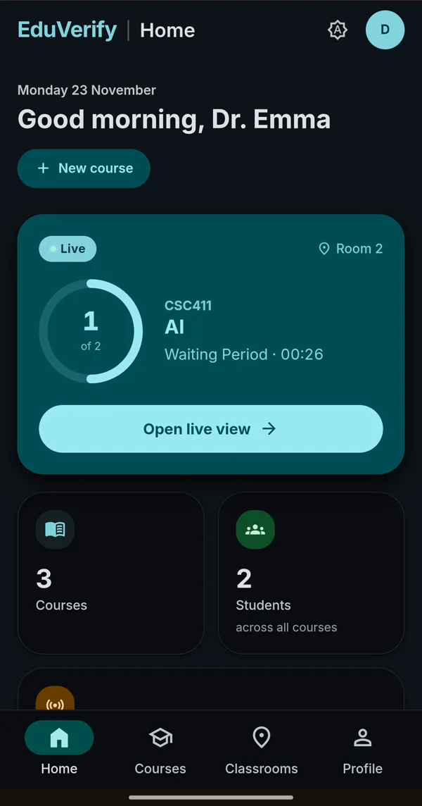
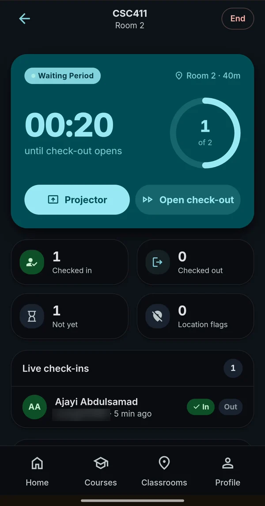
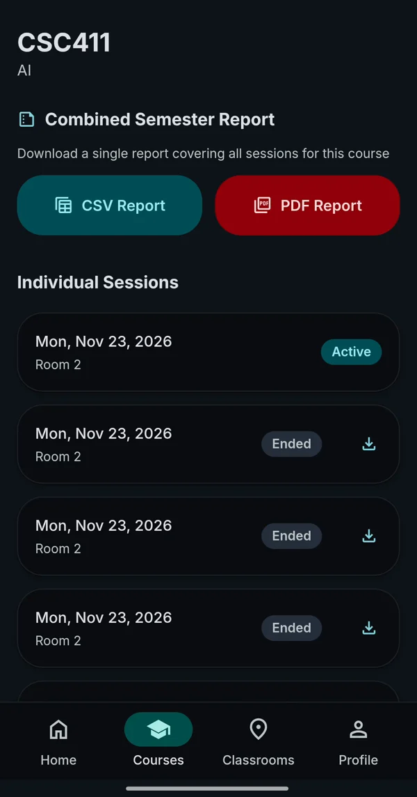
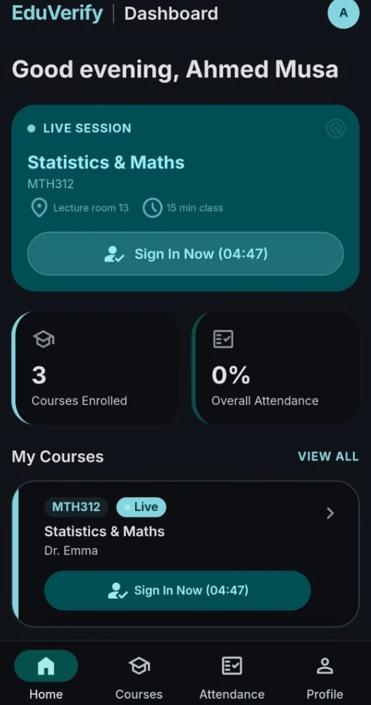

EduVerify
Attendance that verifies itself. Students check in from their own phone in about 20 seconds, and the server only records it once their location, face and liveness all check out.

Signing in for a friend takes two seconds.
Paper registers get passed around, and most tap-to-sign-in apps only prove that someone pressed a button, not that the right student is actually in the room. Lecturers lose class time and still can't trust the numbers.
Prove where, prove who, and let the server decide.
A check-in needs three things: a GPS reading inside the classroom, a face that matches, and a liveness check so a photo or video won't pass.
The phone only submits evidence. The server re-checks everything and writes the record itself, so students can't edit their own attendance.
Three checks,
one tap
A real check-in from my phone: course CSC411, Room 2.
Class is live
The dashboard shows the open session with a countdown, plus your attendance for each course.

Location
The phone samples GPS for a few seconds and keeps the most accurate fix. Here: 14 m from Room 2.

Face + liveness
Blink, then turn your head to a randomly chosen side, so a printed photo or a replayed video fails.

Checked in
The server confirms it all and awards the marks: 83% face match, 14 m away, +5 marks.

A full check-in in 29 seconds.
From the live session on the dashboard to the location check, the blink and head turn, the server's verdict, and the dashboard updating: attendance goes from 33% to 40%.
Recorded on my phone. Browser pop-ups and the address bar are trimmed out.
Checking in to CSC411
Location · face · liveness
Watch the room fill up
Tap any screen to see all six lecturer views.



Built so it can't be gamed
Trust came first in the rebuild. Polish doesn't matter if attendance can be faked.
The server decides
The browser only submits evidence: an aligned face crop and a GPS reading. The Python API checks the session window, enrollment, distance and face match, then writes the record in a transaction, so a double tap can't create two.
Authenticated API
Every request carries a Firebase ID token. The user's identity comes from that token, never from the request body.
No photos stored
Only face encodings are kept, in a server-only collection that no client can read. Enrollment captures four poses and matches against the best one.
Least privilege, tested
Students read only their own data, and lecturers manage only their own courses. The Firestore rules are covered by 51 automated tests.
Spoofing gets flagged
Readings are judged by their accuracy, and signs of fake-GPS apps or impossible travel between sessions are flagged for the lecturer to review.
Check in and check out
Each session has a check-in window at the start and a check-out window near the end, so leaving early doesn't earn full marks.
Built it, then rebuilt it
Drag the handles to compare the first version with today's. The rebuild ran in seven phases.

Student dashboardLive countdown ring, attendance % per course and clearer status.

Lecturer dashboardLive sessions up front, with a one-tap way into the live view.
How the pieces fit
The browser gathers evidence, the server judges it, and Firestore enforces who can read and write what.
- React 19 + Tailwind 4
- MediaPipe: face quality, liveness, aligned crop
- GPS best-fix sampling
- Installable app with offline page
evidence
- RetinaFace detection
- Facenet512 embeddings (DeepFace)
- Checks window, enrollment, distance, match
- Writes attendance via Admin SDK
writes
- Profiles, courses, sessions
- Live updates to both apps
- Rules: students read-only